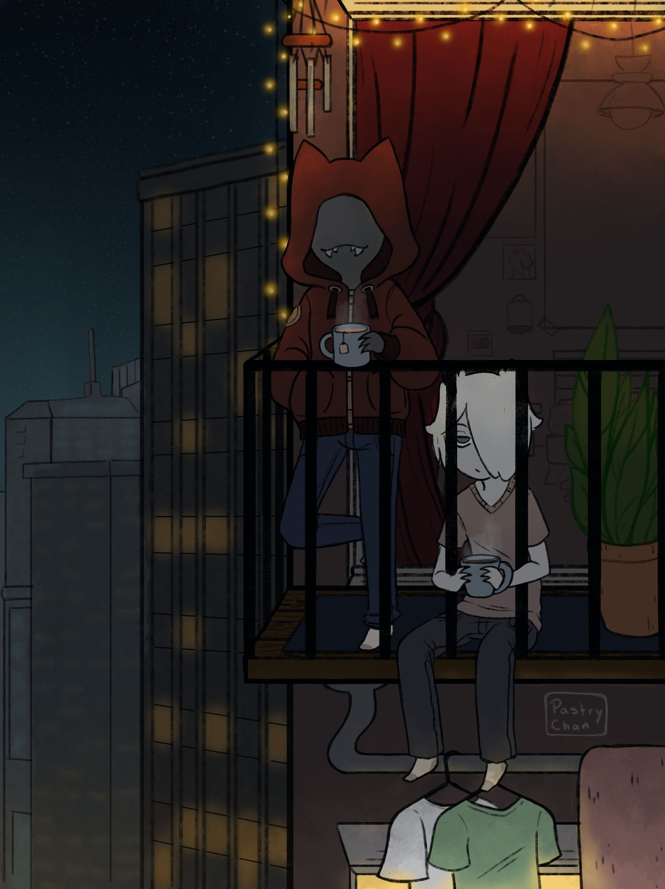

Ikimaru, Fukari, Yuto Sano, Neoshoco, Jamie Hewlett, Brett Parson
Gorillaz, Tyler the Creator, Glass Animals, Mother Mother, Creature Feature, Dr. Steel, Babymetal, Joost, Snarky Puppy
Hogfather, Kung Fu Hustle, Mr. Nobody, The 100yr Old Man Who Climbed Out The Window and Disappeared, MicMacs, Tucker and Dale vs Evil, Ernest & Celestine, Wolf Children
Ted Lasso, Severance, Gen V, Wellington Paranormal, BBC Ghosts, Murderbot, Boy Swallows Universe, Hot Spot, 6 Feet Under, Alice in Borderland, Resident Alien, The Haunting of Hill House
Death Note, Soul Eater, Dungeon Meshi, Ranma 1/2, Uruseri Yatsura, Yuru Camp, Apothecary Diaries